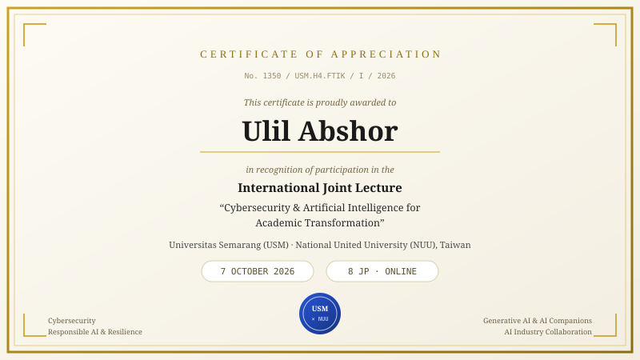
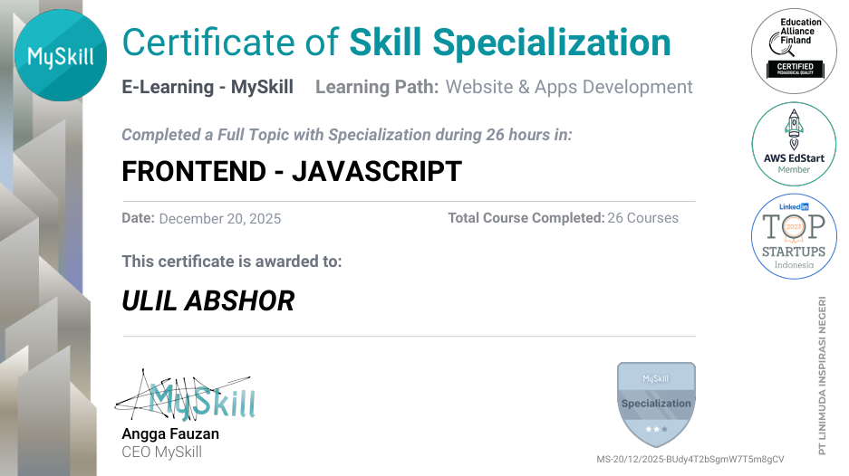
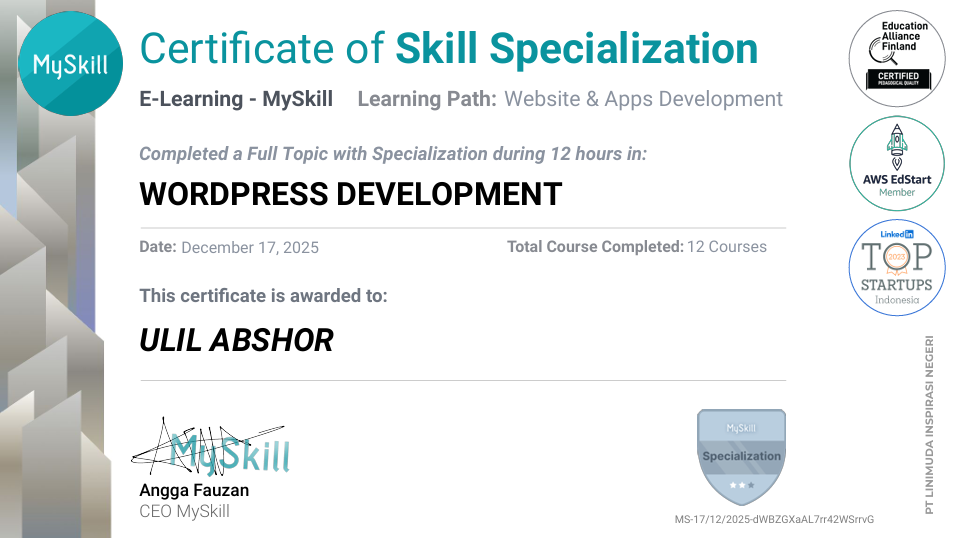
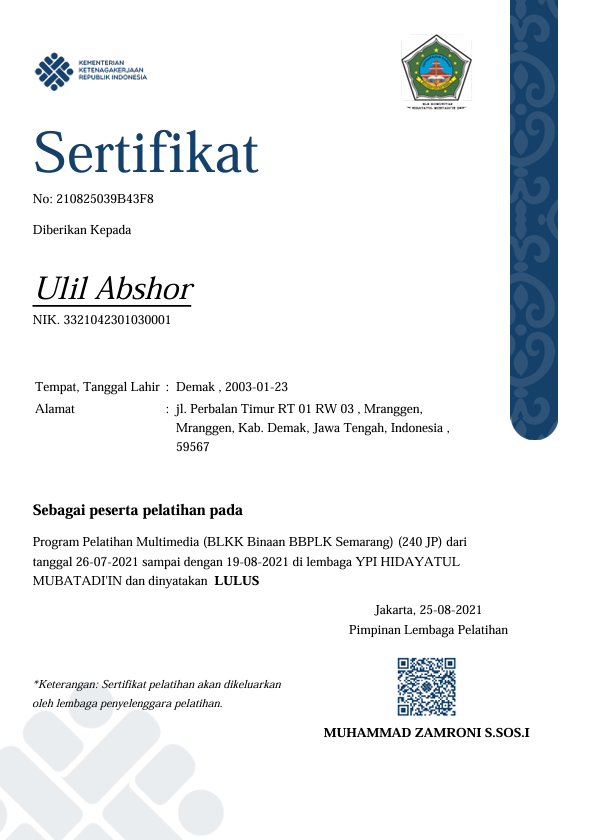
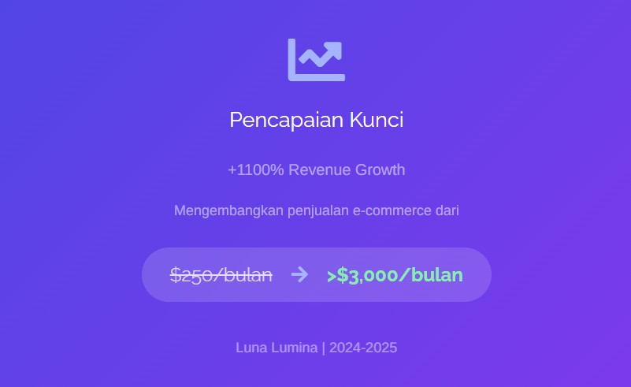

Hi, I'm Ulil Abshor — a self-taught engineer. I work across automation, AI agents, web apps, data pipelines and software testing: I learn how a system works, find where the time is being wasted, and build the smallest thing that removes it.
🧰 What I've built so far: an AI admin for online shops (WhatsApp chat → orders → Google Sheets), a private-API automation bot running 112 cycles a day without a failed batch, a 40-source data pipeline with zero duplicates, a document chatbot grounded in the user's own files, and Playwright test suites for bug audits. Different problems, same approach.
🛠️ Stack: Python, JavaScript, LLM APIs, Google Sheets, WhatsApp & Telegram bots, Playwright, SQLite, cron, Linux. Every build ships with logging, alerts, a tested end-to-end path, and a handover doc — because a half-working tool is worse than none.
🚀 Open to automation, AI agents, web apps, data pipelines and QA work — freelance or full-time.
HTML, CSS, JavaScript
Responsive Design
WordPress, Elementor
Git & Version Control
Python
Claude API / OpenAI API
RAG Systems
n8n Workflows
Microsoft Office
Administration
Customer Service (English)
AI agents that do the admin work. Fixed scope, fixed price, working in days — not a proof of concept.
3–5 days · fixed scope
A shop admin that answers customers 24/7 and writes every order into a spreadsheet — without copying anything by hand.
4–6 days · fixed scope
Drafts your daily posts from your product data, waits for your approval, then schedules them — and reports what people said.
7 days · admin + content
Admin and content running together, with one daily report and one person responsible for both.
Scope fixed before we start · 50% upfront, 50% on delivery · 2 free revisions
⚡ Limited slots — I take 3 new builds at a time so each one ships on schedule.
Every delivery is tested end to end before handover: customer chat → spreadsheet row → WhatsApp confirmation. If a step fails, it is not finished.
Zero-streaming backend · sub-25 ms edge inference · MediaPipe Pose Landmarker (33 landmarks, 3D) running entirely in the browser.
EXECUTIVE SUMMARY
A pose-based motion classifier that runs where the camera is. The browser captures frames with getUserMedia(), runs the MediaPipe Pose Landmarker through WebAssembly with the GPU delegate, and classifies movement from 33 3D landmarks — all before a single byte leaves the machine.
The CodeIgniter 4 layer does one job: render a clean view wrapper. There is no frame proxying, no video queue and no media worker on the server. Only state events (state, confidence, timestamp ≈ 120 B) reach the backend over REST or WebSocket, so bandwidth stays flat no matter how long a session runs — and the video never exists outside the browser tab.
ARCHITECTURE FLOW
Webcam → getUserMedia → Pose Landmarker (WASM/GPU) → kinematic classifier → UI overlay. Dashed paths are the only things that cross the network boundary.
KINEMATICS & MATHEMATICAL THRESHOLDS
| MOVEMENT | SIGNAL & FORMULA | THRESHOLD | EDGE HANDLING |
|---|---|---|---|
| Jumping | Hip Δy (23/24) + ankle Δy (27/28) v = Δy / 5 |
v > 0.045 · body_height | Feet cut off by the webcam frame → hip-only fallback (Δy > 6% torso length) |
| Crouching | Hip–knee–ankle interior angle at the knee θ = angle(hip−knee, ankle−knee) |
θ < 120° + hip below calibrated baseline | Baseline hip position calibrated from 60 standing frames (median) |
| Kicking | Ankle radial displacement from pelvic midpoint d = |ankle_x − pelvis_x| / shoulder_width |
d > 1.15 | Anchor-leg stability verified ≥ 4 frames (rejects walk cycles) |
| Lying down | Torso vector, shoulder midpoint → hip midpoint φ = atan2(t.x, −t.y) |
|φ| > 60° for ≥ 10 frames | Also triggers when the whole body drops into the lower third of frame |
MOVING AVERAGE FIFO
5–10 frame FIFO buffer per landmark, per axis. Removes single-frame landmark jitter (~1–2 px at 720p) before any threshold is evaluated.
DEBOUNCE 300 MS
State-lock after a detection fires, plus hysteresis (enter 0.045 / exit 0.030) so landing does not flicker between JUMP and CROUCH.
RUNTIME BUDGET
Inference 12–22 ms/frame, classifier < 2 ms, WASM heap ~30 MB. Fits the 33 ms frame budget at 30 FPS with room for rendering.
2 pages · system flow, threshold table, state machine, performance budget





Full-time, Freelance, Remote Work